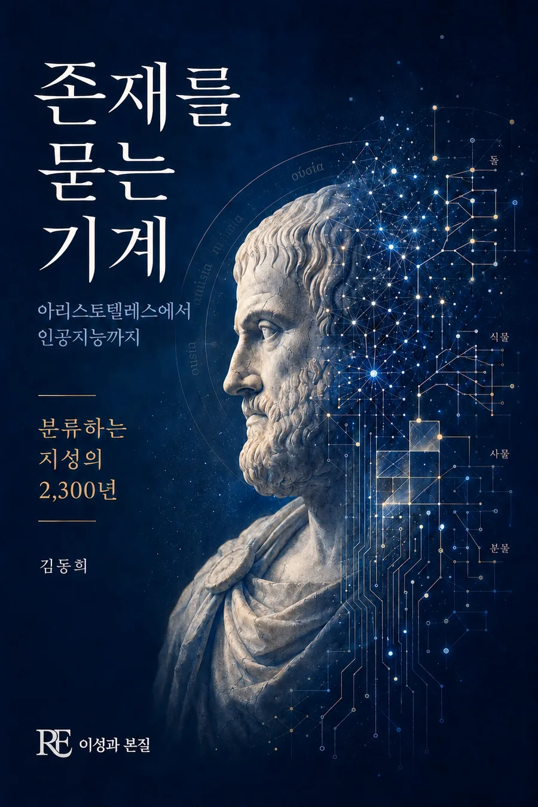

돌, 식물, 사물, 문물 — 세계를 나누고 이름 붙여온 분류하는 지성의 역사. 아리스토텔레스의 범주에서 인공지능의 분류 체계까지 이어지는 2,300년의 지적 계보.
출간일 2026-08-12
아리스토텔레스가 세운 범주의 체계에서 오늘날 인공지능의 분류 알고리즘까지, 인간은 끊임없이 세계를 나누고 이름 붙여 왔습니다. 이 책은 분류하는 지성의 2,300년을 추적하며 존재를 묻는다는 것의 의미를 되짚습니다.
인공지능과 철학의 교차점에 관심 있는 독자, 아리스토텔레스 논리학·범주론에 관심 있는 독자.